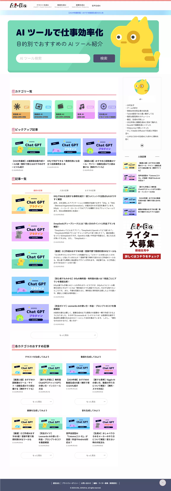

Webデザイン
AIツール
情報サイト
Aibo
AIツール情報サイトとライター募集プラットフォームのWebサイトデザイン。 生成AIの最新情報と実用的なツール紹介を提供し、AIライターの育成も行う総合プラットフォームです。

使用技術・ツール
デザインツール
Figma, After Effects, Cinema 4D
プロトタイピング
Figma, ProtoPie, Principle
3D・モーション
Blender, After Effects, Lottie